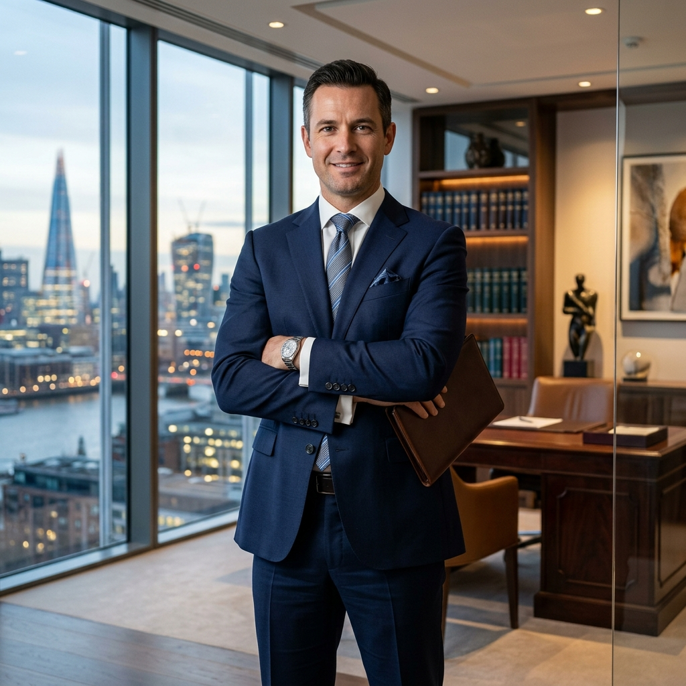

Atuação estratégica, discreta e altamente eficaz. Consultoria jurídica de excelência para proteger quem você ama e o que você construiu.

Prestamos assessoria jurídica de alto padrão, desenhada para solucionar as questões mais complexas.
Consultoria estratégica e contencioso para empresas de diversos portes. Foco na segurança e crescimento do seu negócio minimizando riscos.
Atendimento humanizado em divórcios, inventários, guarda e planejamento sucessório para a mitigação de desgastes familiares.
Elaboração minuciosa e revisão de contratos, responsabilidade civil e litígios cíveis. Atuação implacável na blindagem patrimonial.
Com mais de 15 anos de atuação sólida e incansável, o Dr. Alexandre Vasconcelos consolidou-se como referência na resolução de problemas jurídicos complexos.
Sua trajetória é marcada por grandes vitórias nos tribunais superiores e acordos de alta monta, sempre preservando o sigilo absoluto e o foco obstinado no melhor interesse de seus clientes.
O nível do nosso serviço é medido pela satisfação incondicional de quem confia em nós.
"Estava com um problema societário gravíssimo na minha empresa. O Dr. Alexandre assumiu o caso e reverteu a situação em poucas semanas. Excelente profissional, extremamente tático."
"No inventário da minha família, que já se arrastava com outros advogados, ele foi cirúrgico e pacificador. Conseguiu alinhar os interesses e finalizou tudo com louvor."
"Atendimento impecável desde o primeiro conselho. Muita agilidade, transparência nas documentações e foco no meu melhor cenário e não no litígio puramente."
Tire suas dúvidas operacionais antes de dar o primeiro passo legal.
Realizamos uma avaliação aprofundada dos documentos para emitir um diagnóstico real do seu problema. Diferente de muitos serviços, nós desenhamos um plano de ação completo já nessa primeira imersão. É cobrado o valor padrão OAB de avaliação técnica.
Sim. O sistema legal e processual atual está inteiramente 100% digitalizado, o que nos permite atender clientes e protocolar ações judiciais no Brasil todo e no exterior com a mesma excelência do atendimento presencial.
O judiciário varia substancialmente conforme os tribunais. Nosso processo é arquitetado para prevenir atrasos; tentamos soluções e acordos enérgicos logo na parte extrajudicial. Se a causa chegar à justiça, lhe blindamos imediatamente com liminares.
Cada processo demanda um escopo customizado. Aceitamos via de regra parcelamento inteligente via PIX, transações de cartão e contratos mensais (retainer) ou taxa atrelada no êxito a depender unicamente da área atendida.
Venha tomar um café conosco. Nosso escritório está localizado no coração financeiro de São Paulo.